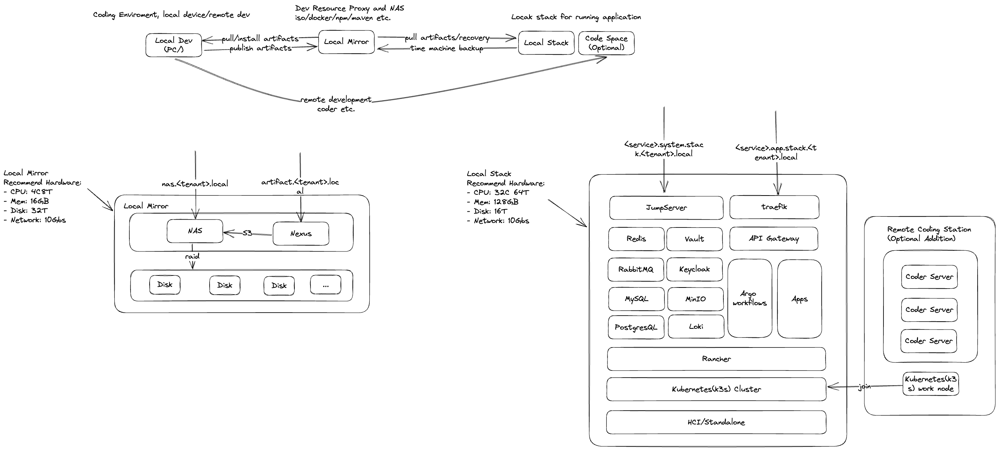

Local Serial Hardware Products

- Local Mirror: A local mirror of development artifacts and software packages based on the NAS.
- Local Stack: A local stack of development environments with service governance and persistence.
- Local DevBox: A local development environment for coding and testing.
Local Mirror
Hardware (recommendation):
- CPU: 8 core 16 thread
- RAM: 32GB DDR4
- Storage: 1TB NVMe SSD (OS), 4TB HDD (Data) * 2
- Network: 2.5Gbps Ethernet * 2
Software: TrueNAS offer s3 service as Nexus blob storage.
- NAS: TrueNAS Core (Minimum Hardware Requirements)
- Processor: 2-Core Intel 64-Bit or AMD x86_64 processor
- Memory: 8 GB Memory
- Boot Device: 16 GB SSD boot device
- Storage: Two identically-sized devices for a single storage pool
- Mirror: Sonatype Nexus Repository
- CPU: 8 core
- RAM: 16GB
- System Ops: Nomad
- Firewall: jumpserver